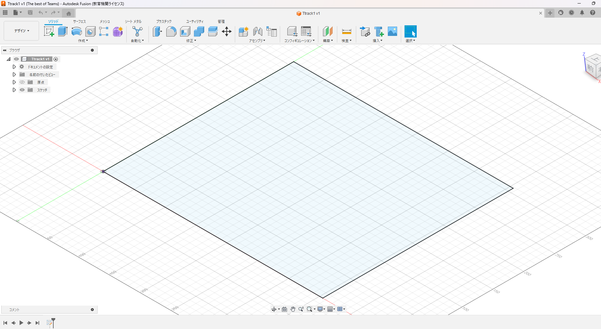
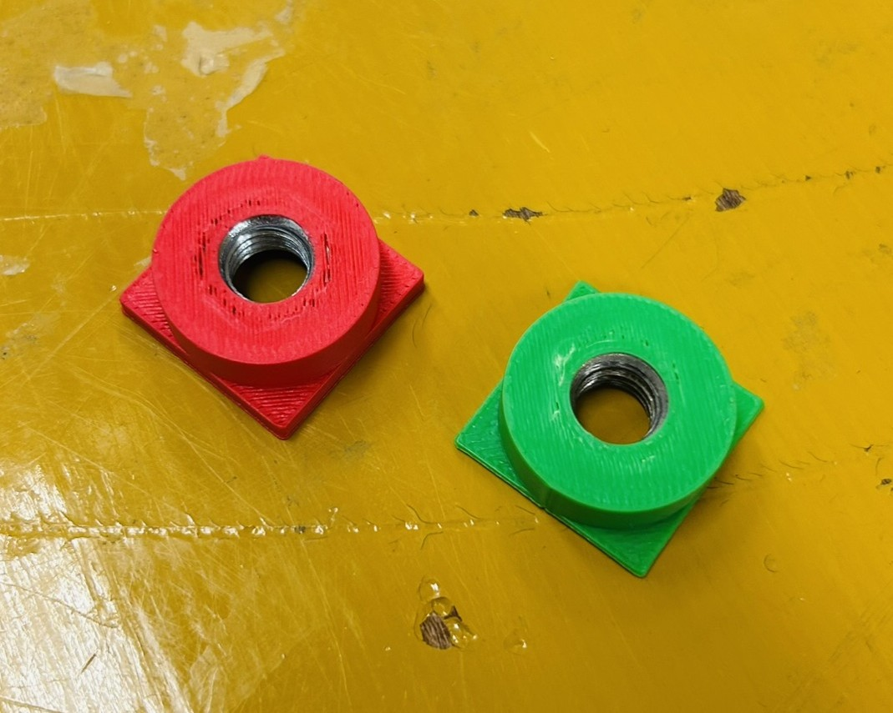
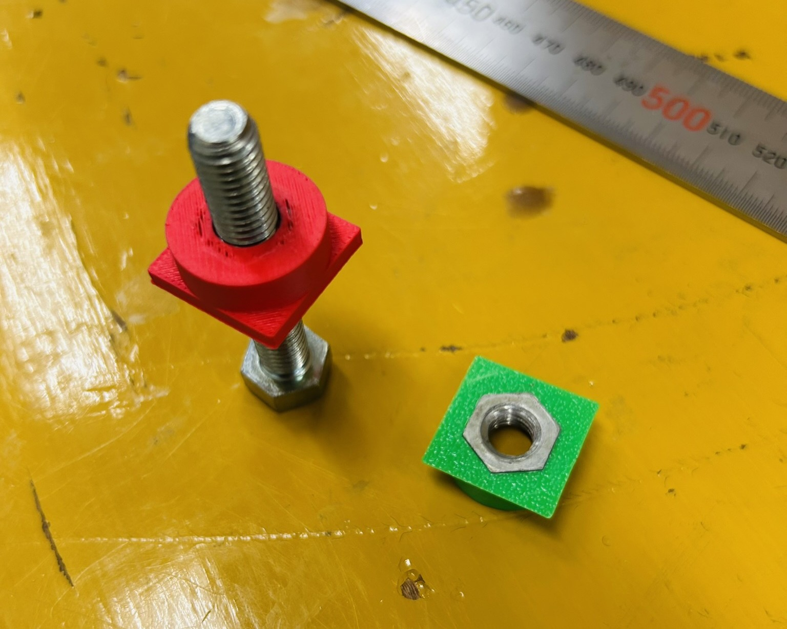

T-trackボードの制作
2025/01/18
大会への出展
部活動再開後、活動が安定するまでNゲージ班は大会等への出展を控えていましたが、そろそろ大会に出てもいいだろうということで、参加費無料のLAYOUT AWARDという大会にでることになりました。大会の規定では、T-trackの規格のボードで出展できるので、T-trackボードをつくることにします。小さいサイズなので、大人数ではやりずらいのと、暇をする人が出ないよう今回の大会は1ボード1人か2人で制作することにします。合計4ボードの出展です。
CADでの設計
最もシンプルな作りで作れば中1にもできると思い、中1への教育も兼ねて最もシンプルな7枚の長方形の板で作ります。Fusion360で一番基本のスケッチを作成して長方形(もしくは直線)を引くという作業を覚えてもらいました。サイズは規定ギリギリの355×308×51mmです。高さの51mmは設置の必要があるアジャスターを調整できる余裕を持たせておくための横の板幅40mm + 底面5.5mm×2枚です。
材料一覧 ※材の厚みは5.5mm
- 355×308 1枚
- 355×40 2枚
- 297×40 2枚
- 308×50 2枚

レーザー加工と組み立て
家庭科室に新しいレーザー加工機が来たので、これを使ってみます。これのいいところは、パワーが強いところ、位置、サイズが正確で精度がいいところです。メーカーの講習を受けた人でないと扱えないので、顧問の先生の立ち会いのもと行います。レーザー加工機専用にしている。パソコンにデータを近距離共有で送れます。便利。ファイル形式は.dxfです。fusion360のエクスポートから直接出力できます。
組み立ては側面の板をコーナークランプなどで固定してボンドで接着し、上面と下面を取り付ければ完成です。今回はMDF板を使いましたが、もともとのMDF板がしなっており、固定が大変でした。なるべく平らで歪んでいない板を使うことをおすすめします。
アジャスターの制作
ボードには、線路面の高さが接地面から70~100mmで調整できる必要があります。一昨年個人的に出展した鉄道模型コンテストのT-track部門では、ボルトを使ったアジャスターで調整しており、これを参考に作ってみたいと思います。
まず、ボルトを挿せるネジ穴がボードの底面にある必要があります。鉄コンでは爪付きナットをボードに取り付ける形でネジ穴を作っていました。しかし、爪付きナットを使うといざ大量生産することになると値が張ります。そこで、3Dプリンターを用いてナットを木材に固定できるような部品を作りそこにボルトを挿し込めるような形にしました。直径20mmの円柱に直径13mm(M8ナットの外径)の6角形の穴を開け、下面にボードの底面と引っかかるような爪を、上面にナットが引っかかるような爪を取り付けたような形にしました。（写真は試作品）
